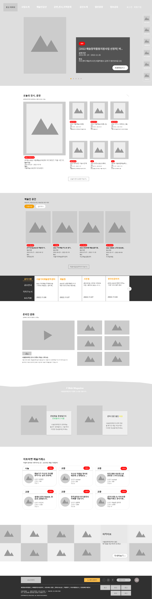
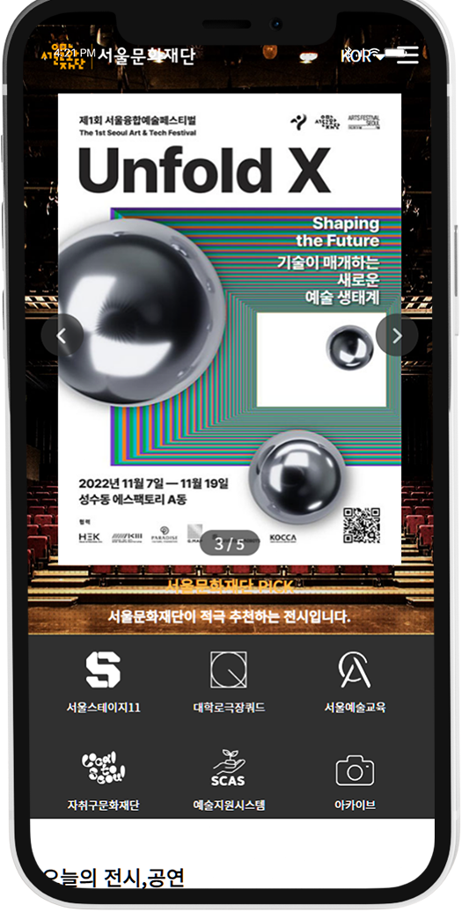
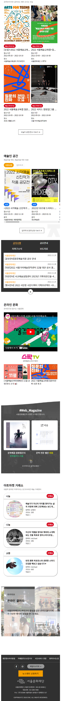
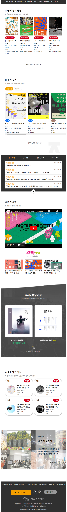
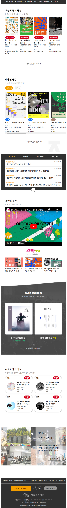

#ffffff
서울문화재단
팀프로젝트로 제작한 서울문화재단 리뉴얼 사이트입니다.
메뉴 정리와 컨셉 기획, 경쟁사 분석, 와이어프레임 제작,
퍼블리싱을 담당하였고 플렉스와 미디어쿼리를 사용해
반응형으로 제작하였습니다.
[MAIN , SUB]

OVERVIEW
PLAN
시민과 문화예술이 하나가 되는 것을 목적으로 서울문화재단은 수많은 예술,문화사업을 지역 예술인들께 지원하고 있습니다.
재단은 "예술로 함께, 시민 곁으로" 라는 슬로건을 가지고 열정적으로 문화사업을 추진하고 있는데 기존 홈페이지에서는 재단의 슬로건 느낌을 찾기가 어려웠습니다.
서울에서 주최하는 대부분의 사업을 담담하고 있다보니 관련 사업과 사이트들이 헤더에 밀집되어 있었고 많은 메타포와 글자들로 복잡한 느낌을 주었습니다.
메인 컨텐츠 부분에는 글자로만 구성된 컨텐츠들 때문에 예술적인 느낌이 들지 않아 다소 아쉬웠습니다.
이러한 점들을 개선하고자 서울문화재단을 리뉴얼 사이트로 선택하게 되었습니다.
기획 단계에서 재단이 생각보다 방대한 면으로 활동을 하고 있어 이것을 정리하고 배치하는데 어려움을 겪었습니다.
접근성을 높여 문화사업의 참여율을 높이고 재단의 컨셉에 맞게 제작하기 위해 서울문화재단에 대해 계속해서 분석하고
그것을 피피티로 정리하여 팀원들의 의견을 모았고 경쟁사 분석을 통해 재단들의 공통되는 부분들과 가시성이 좋은 부분들을 가져왔습니다.
풀다운 메뉴를 만들고 타이틀을 변경하며 복잡한 메뉴를 정리하여 헤더부분의 복잡함을 해소시킬 수 있었습니다.
메인부분의 글로만 가득했던 컨텐츠들도 더 다양한 컨텐츠로 채웠고 이것을 바탕으로 제작을 완료하였습니다.
BENEFIT
시민의 공간과 예술인의 공간을 나누어 사용자의 접근성을 높이고 예술인의 참여율을 높여
시민들은 문화예술과 가까워지고 예술인들은 꿈을 펼칠 수 있도록 재단의 슬로건에 한발짝 다가가겠습니다.
CONCEPT
예술적인
열정적인
심플한
COLOR
활동성을 나타내는 컬러를 사용하여
열정적인 느낌을 주었습니다.
#303030
#F49E00
WIREFRAME

01
헤더 네비게이션
메뉴 마우스 오버 시 해당 메뉴가 드롭다운됩니다.
02
메타포
메타포 클릭 시 해당 사이트로 이동합니다.
마우스 오버 시 색상이 변경됩니다.
03
메인 비주얼
진행중인 문화행사를 배너에 넣습니다.
swiper를 이용해서 슬라이드로 구현합니다.
04
전시/공연 정보
현재 진행 중인 공연/전시 정보를 제공합니다.
마우스 오버 시 이미지가 확대됩니다.
05
예술인 공간
radio를 이용해 지원사업과 입주작가 공모를 탭메뉴로 표현합니다.
swiper로 슬라이드를 구현합니다.
06
공지사항
공지사항을 포함한 여러 소식을 탭메뉴로 구현합니다.
마우스 오버 시 상자가 왼쪽 위로 올라갑니다.
07
온라인 문화
재단의 유튜브 채널을 홍보합니다.
마우스 클릭 시 유튜브 페이지로 이동하고
오른쪽 영상들은 이미지로 표현합니다.
08
웹진
09
아트마켓
문화예술에 대한 생각을 공유할 수 있는 컨텐츠입니다.
마우스 오버 시 박스가 위로 올라갑니다.
10
아카이브
재단 행사들의 이미지를 볼 수 있습니다.
이미지가 왼쪽으로 흘러갑니다.
11
푸터
서울문화재단의 정보와 로고를 넣어줍니다.
DESING


 
